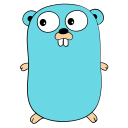

Engineering for people.
I build voice interfaces and developer tools. In WeatherGPT, farmers can use a phone menu for local forecasts and crop advice. On the other side of the call, operators can see which areas a warning covers and track call outcomes.
Selected work
Six projects, from a phone service for farmers to a console that shows how three database nodes agree on a write. Each entry includes a demo, source code or both.
WeatherGPT
WeatherGPT connects farmers with local forecasts, crop advice and weather warnings by phone. A new caller chooses Hindi, English or Kannada and enters a six-digit postal code. Operators use a dashboard to manage warnings for the affected areas.
Project details
- The keypad menu offers today’s weather, crop advice and a seven-day forecast. Weather lookups use Open-Meteo.
- The advisory uses the selected crop and local weather to suggest when to irrigate or spray.
- A separate, PIN-protected voice assistant takes spoken questions about weather and farming.
- Operators can target alerts by postal code. Outbound calls and SMS are simulated unless live delivery is configured and enabled.
MariaDB Magics · Studio
MariaDB Magics lets you run SQL and plot the results inside a Jupyter notebook. The browser studio lets you try those queries on sample data. Vector search and historical queries need a connected MariaDB database.
Project details
- The public studio runs SQL and charts against an in-memory SQLite sample dataset. You can browse the schema, export CSV results and save queries in your browser.
- With a live MariaDB connection, the studio uses native vector functions to find similar records. These operations are unavailable in sample-data mode.
- Historical queries use a system-versioned table and FOR SYSTEM_TIME AS OF TIMESTAMP. The setup guide explains how to run this mode with your own database.
- The original Jupyter extension provides four commands: %mariadb, %mariadb_plot, %mariadb_time and %mariadb_vector, covering SQL, charts, time-based analysis and vector search.
VoiceOps
VoiceOps compares up to five ways to answer the same recording. Some wait for the full reply. Others start speaking as soon as a sentence is ready. You can listen to the results and compare when playback starts.
Project details
- Each path uses the same recording, prompt and providers. Two paths change just one step so you can isolate the wait for text or for audio.
- The timing report separates events on the server from the moment the browser schedules the first audio for playback.
- You can check whether a reply contains an expected fact or JSON field, or whether it requested an allowed simulated action.
- Export a comparison as JSON or CSV. In the conversation view, you can ask a follow-up or interrupt a reply.
Distributed KV Server
This Go experiment shows how three nodes agree on a change. Write a sample value in the console, then compare what each node has committed. You can read the value back or delete it from the same page.

GoProject details
- All three Raft nodes run in one process. A write succeeds once a majority has copied the change and the leader has applied it.
- The console refreshes every second, showing each node’s role, election term, log length and counts of committed and applied changes.
- The repository includes a separate command for running nodes individually and a test that stops a leader to check that another is elected.
- Everyone shares the same sample data. Values reset on restart, and reads from the leader can be stale if the nodes lose contact.
BHDesk
BHDesk keeps notes from different tabs together in a Chrome side panel. Highlight a passage to save a summary or translate Hindi into English. Its tab organizer groups open pages by topic.
Project details
- Quick Notes keeps summaries and translations in Chrome’s local storage so you can revisit them.
- The tab organizer uses titles and URLs to group open tabs by topic.
- These features use Chrome’s built-in AI APIs. A compatible browser and device may need to download the models first.
AI DevSecOps Guardian
When a GitLab build fails, Guardian asks a model to read the job log and suggest a fix. It can open an issue for a developer to review, or add a note when the same failure recurs.
Project details
- A GitLab job event triggers a log lookup. Guardian sends the tail of a failed job’s log to a model hosted by Groq for a possible cause and suggested next step.
- Rules can flag a successful job for analysis too. For example, the log may mention a deprecated dependency or repeated warnings.
- Guardian uses SQLite to recognize repeat findings and link them to an existing GitLab issue. A developer reviews the suggestion and makes any code changes.
Experience
At Bluella, I built for browsers and inboxes. At IILM, I chair the ACM student chapter and led a workshop on the tools students use to start a project.
Web Engineer Intern
I worked on 28+ websites, landing pages and email templates across healthcare and business software projects.
- For a partner portal, I built forms that checked entries before submission and added a choice of themes.
- For email, I adapted layouts to different screen sizes and email clients.
Chair
I organize events where students can take a web project from an idea to a pitch.
- Organized Build → Pitch → Win, a web development event with the Centre of Excellence for Cybersecurity & Digital Forensics.
- Coordinated technical sessions, an expert talk, and a student startup pitch competition.
Technical Workshop Lead
I led a workshop on the software development lifecycle, command-line tools and setting up a virtual machine.
Skills & tools
React powers the WeatherGPT call dashboard. The MariaDB extension runs SQL inside Jupyter notebooks, and the Go console shows how a write reaches the other nodes.
- HTML5Responsive web pages
- CSS3Layouts & styling
- JavaScriptWeb interactions
- TypeScriptTyped application code
- ReactWeatherGPT dashboard
- Node.jsServices & integrations
- PythonAPIs & data tooling
- GoThree-node store
- FastAPIPython web APIs
- PostgreSQLCall and alert records
- MariaDBSQL & vector search
- JupyterSQL in notebooks
- GitVersion control
- GitLabFailed pipeline reports
- DockerContainerized deployment
- LinuxDevelopment environments
See these tools at work in WeatherGPT, MariaDB Magics and Distributed KV.